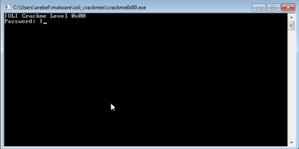
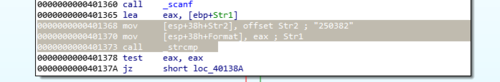

Adding Automation to Blue-Jupyter Malware Notebook
I came across the Blue-Jupyter project on Github while researching Jupyter notebooks. This short demo video got me excited, so I cloned the project and added some improvements that automate many things when I am looking for malware to investigate.
What are Jupyter Notebooks?
For readers who may be unfamiliar, Jupyter Notebooks are a web-based tool that allows users to create and share documents that contain live code, equations, visualizations, and narrative text. They are a popular tool among data scientists and researchers but have also adapted for use in other fields, such as cybersecurity.
My Additions to the Blue-Jupyter
Many of the changes I've made are focused on automating the process of quickly looking for interesting new samples to investigate.
One addition to the notebook is the automated downloading of samples from Malware Bazaar. This can download a maximum of 100 samples continuously. Additional information is listed to highlight …
IOLI Crackme 0x04
I am continuing my reverse engineering review by tackling the IOLI crackmes by @pof. These are beginner friendly challenges that is perfect for newbies or for those who want to review the basics like me. Check out my writeups for 0x00, 0x01, 0x02, and 0x03.
Getting the password
Loading the program in IDA revealed something new. There is now a _check function that when opened looks more complicated than the previous challenges.

The one thing that I immediately noticed is the call to the _strlen function similar to the previous challenge. This means that the length of the input string plays another important role.
One curious thing is the condition that leads to the "Password Incorrect" block, as shown below.

call _strlen
cmp [ebp+var_C], eax
jnb short loc_401387
From the looks of it, the check will fail if var_C (Which is our var_counter from the previous challenge) reaches the …
IOLI Crackme 0x03
I am continuing my reverse engineering review by tackling the IOLI crackmes by @pof. These are beginner friendly challenges that is perfect for newbies or for those who want to review the basics like me. Check out my writeups for 0x00, 0x01, and 0x02.
Getting the password
After opening the program in IDA I immediately saw that the code is almost exactly as the one in challenge 0x02, with the exception of our expected cmp command being inside the _test function.

Reading through the code I realized that the password for this challenge is exactly the same as the previous one!
But what's this? The success and failure messages are all garbled? And plus, what is this other new function called _shift?

A different kind of challenge
Opening up the _shift function shows us a short, but interesting looking program flow with two branches and one of the branches looping …
Maldoc101 Writeup (Part 2)
This is part 2 of my writeup for the Maldoc101 challenge. Check out part 1 for the beginning of the analysis.
The next couple of lines does the same concatenating technique similar to the previous steps.
deaknaugthein = roubhaol.kaizseah.ControlTipText
giakfeiw = deulsaocthuul + gooykadheoj + roubhaol.paerwagyouqumeid.ControlTipText + deaknaugthein
queegthaen = giakfeiw + roubhaol.joefwoefcheaw
At the end of the code above queegthaen now contains the value Win32_Process + s + tar + tu + P. Or when combined creates the string Win32_ProcessstartuP which probably refers to this WMI class in the Microsoft docs.
Note: This writeup appears to be incomplete. For the complete analysis, please refer to part 1 of this series.
Maldoc101 Writeup (Part 1)
This is part 1 out of 2 of my writeup for the Maldoc101 challenge made by Josh Stroschein (@jstrosch) and is currently playable at Cyberdefenders.Org. I've done some maldoc analysis before but this is the first time I'm writing about my approach.
There is also an already existing writeup about this challenge from the creator himself. You should check that out if you want a more detailed and focused writeup. This writeup is more from the perspective of someone relatively new to malware analysis. There's a lot more exploration and trial-and-error which, I hope, might give the reader a different view in how this kind of problem is approached.
The challenge
Name
MalDoc101 - Malicious Document
Description
It is common for threat actors to utilize living off the land (LOTL) techniques, such as the execution of PowerShell to further their attacks and transition from macro code. This challenge is intended …
IOLI Crackme 0x02
I am continuing my reverse engineering review by tackling the IOLI crackmes by @pof. These are beginner friendly challenges that is perfect for newbies or for those who want to review the basics like me. Check out my writeups for 0x00 and 0x01.
Getting the password
After the first two challenges I kinda know what to expect already so I skipped running the program and immediately loaded it in IDA.

So the lines leading to the comparison command now looks more complicated than before. We could easily see that there are some computations that happens thanks to the presence of add and imul. Before those, we have two values (5Ah and 1ECh) which we can easily guess are the values that will be worked on by these arithmetic functions.
So going through the lines sequentially we can see that the two numbers are first added with add [eax], edx. Which …
Introducing shcode2exe
[Edit: shcode2exe is now part of Remnux]
I've been playing around with Remnux and encountered a problem trying to get one of the tools to run properly. The tool is shellcode2exe, it is used to compile binary shellcode to a file so it can easily be debugged by a debugger.
When I checked out the code, I was surprised to find out how simple it is. Basically, what happens is that the inputted shellcode is added to a barebones assembly file using the incbin assembly instruction. From there, the file is then automatically compiled and linked.
One big problem with the tool is that it needs to use Wine if it needs to run on Linux. I don't want such a huge dependency especially for my own malware analysis lab so I decided to write my own version which have led to the creation of shcode2exe.
shcode2exe
While similar in …
IOLI Crackme 0x01
I am continuing my reverse engineering review by tackling the IOLI crackmes by @pof. These are beginner friendly challenges that is perfect for newbies or for those who want to review the basics like me. Check out my writeup for 0x00 here.
Getting the password
Of course, the first thing we do is run the program.

Just like last time, we opened up the program in IDA and focused on the part of the code that does the comparing of passwords.

cmp [ebp+var_4], 149Ah
jz short loc_40137c
This seems easy enough.
Initially I entered 149A as the password but this turned out to be incorrect. The reason for this is because scanf was passed a format of "%d".
mov [esp+18h+Format], offset aD ; "%d"
call _scanf
This means that the input it expects is actually a decimal integer. So converting 149A to decimal results in 5274 …
IOLI Crackme 0x00
I am re-familiarizing myself with reverse engineering again by going through some simple crackme challenges. This one is called the IOLI Crackmes by pof. The goal is to find the correct password and also to patch it so that it can accept any input and still show that it's correct.
Getting the password
Running the program shows a password prompt.

Of course, randomly entering passwords is going to be a waste of time so I opened up IDA to look at its code.
I knew that whatever password I enter in the program would be checked against the actual password. This is the part of the program that I should focus on so I scanned the code and found this:

mov [esp+38h+Str2], offset Str2; "250382"
mov [esp+38h+Format], eax;
call _strcmp
And just from these few lines alone I already knew what the password is …